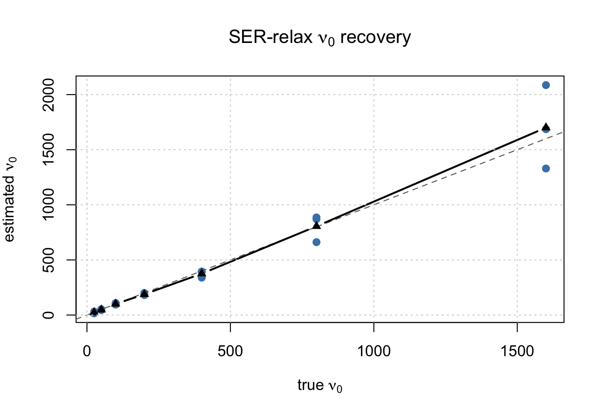
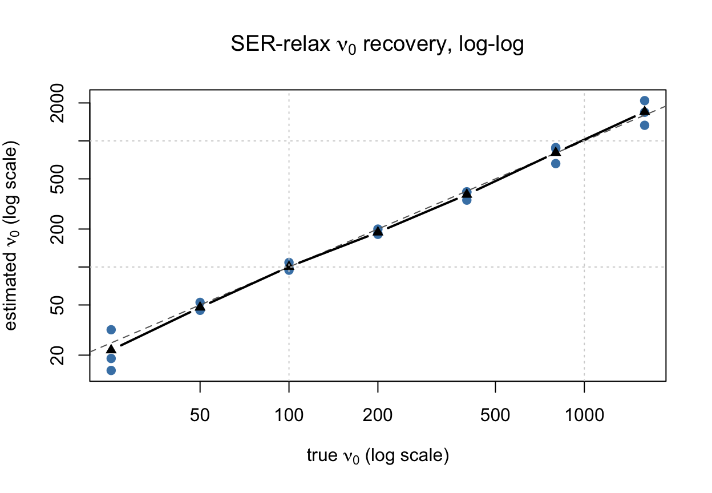

Last updated: 2026-06-21
Checks: 7 0
Knit directory: susie-relax/
This reproducible R Markdown analysis was created with workflowr (version 1.7.2). The Checks tab describes the reproducibility checks that were applied when the results were created. The Past versions tab lists the development history.
Great! Since the R Markdown file has been committed to the Git repository, you know the exact version of the code that produced these results.
Great job! The global environment was empty. Objects defined in the global environment can affect the analysis in your R Markdown file in unknown ways. For reproduciblity it’s best to always run the code in an empty environment.
The command set.seed(20260621) was run prior to running
the code in the R Markdown file. Setting a seed ensures that any results
that rely on randomness, e.g. subsampling or permutations, are
reproducible.
Great job! Recording the operating system, R version, and package versions is critical for reproducibility.
Nice! There were no cached chunks for this analysis, so you can be confident that you successfully produced the results during this run.
Great job! Using relative paths to the files within your workflowr project makes it easier to run your code on other machines.
Great! You are using Git for version control. Tracking code development and connecting the code version to the results is critical for reproducibility.
The results in this page were generated with repository version 33faf9a. See the Past versions tab to see a history of the changes made to the R Markdown and HTML files.
Note that you need to be careful to ensure that all relevant files for
the analysis have been committed to Git prior to generating the results
(you can use wflow_publish or
wflow_git_commit). workflowr only checks the R Markdown
file, but you know if there are other scripts or data files that it
depends on. Below is the status of the Git repository when the results
were generated:
Ignored files:
Ignored: .DS_Store
Ignored: .Rproj.user/
Ignored: analysis/.DS_Store
Untracked files:
Untracked: code/SER-relax-prototype.R
Untracked: code/SER-relax.R
Untracked: code/SuSiE-relax.R
Untracked: code/plot.R
Untracked: code/sim_2pop.R
Untracked: tex/
Note that any generated files, e.g. HTML, png, CSS, etc., are not included in this status report because it is ok for generated content to have uncommitted changes.
These are the previous versions of the repository in which changes were
made to the R Markdown (analysis/SER-relax-demonstrate.Rmd)
and HTML (docs/SER-relax-demonstrate.html) files. If you’ve
configured a remote Git repository (see ?wflow_git_remote),
click on the hyperlinks in the table below to view the files as they
were in that past version.
| File | Version | Author | Date | Message |
|---|---|---|---|---|
| Rmd | 33faf9a | dodat-stats | 2026-06-21 | Publish SuSiE-relax demonstrations in workflowr style |
knitr::opts_chunk$set(
echo = TRUE,
message = FALSE,
warning = FALSE,
fig.width = 6.5,
fig.height = 4.5
)
source("code/SER-relax.R")
source("code/sim_2pop.R")SER-relax is the simplified single-effect version of
SER-relax-prototype. It is derived from SER-relax-prototype
by making two additional approximations: \[
d_j = 1,
\qquad
\omega_j = \nu_0 + 3.
\]
These approximations are useful for two reasons.
First, \(\bar R\) is a correlation matrix, so the diagonal of the target LD matrix is naturally close to one. The prototype variable \(d_j\) mainly models diagonal scaling, but our scientific target is the uncertainty in the LD column shape, not the diagonal. Fixing \(d_j=1\) removes the non-standard \(q(d_j)\) quadrature step. Furthermore, we know that the in-sample \(R\) is also a correlation matrix with diagonal 1. So this makes so much sense.
Second, the prototype writes the \(t\)-like prior on \(z_j\) through a latent precision \(\omega_j\). Replacing \(\omega_j\) by its prior mean, \[ E(\omega_j)=\nu_0+3, \] keeps the main interpretation of \(\nu_0\): larger \(\nu_0\) shrinks the active LD column more strongly toward \(\bar R_{\cdot j}\), while smaller \(\nu_0\) allows more relaxation. On the other hand, we know that \(\omega_j \sim \chi^2_{\nu_0 + 3}\) is well concentrated in \(\nu_0 + 3 \pm \sqrt{\nu_0}\) anyway.
The SER-relax observation model is \[ x \mid \beta,\gamma=j,z_j \sim N_J\left(\beta u_j(z_j),\frac{\bar R}{N}\right), \] with \[ \beta \sim N(0,\sigma_0^2), \qquad \gamma \sim \operatorname{Unif}\{1,\ldots,J\}. \] \(u_j(z_j)\) is the vector with entry \(j\) equal to \(1\), and entries \(-j\) equal to \(z_j\), and \[z_j \sim N_{J-1} \left(\mu_j, \dfrac{S_j}{\nu_0 + 3}\right) = N_{J-1}(\mu_j,\tau^2S_j). \] where \[ \mu_j = \bar R_{-j,j}, \qquad S_j = \bar R_{-j,-j} - \bar R_{-j,j}\bar R_{j,-j}. \]
The variational approximation is \[ q(\gamma=j,\beta,z_j) = \pi_j q_j(\beta)q_j(z_j), \] where \[ q_j(\beta)=N(m_{\beta j},v_{\beta j}), \qquad q_j(z_j)=N_{J-1}(m_{zj},V_{zj}). \]
Let \[ \bar\beta_j=m_{\beta j}, \qquad \overline{\beta^2}_j=v_{\beta j}+m_{\beta j}^2. \] Define \[ A_j = 1 + \operatorname{tr}(S_j^{-1}V_{zj}) +(m_{zj}-\mu_j)'S_j^{-1}(m_{zj}-\mu_j), \] \[ B_j = x_j+(m_{zj}-\mu_j)'S_j^{-1}(x_{-j}-\mu_jx_j), \] and \[ Q_j = \operatorname{tr}(S_j^{-1}V_{zj}) +(m_{zj}-\mu_j)'S_j^{-1}(m_{zj}-\mu_j). \]
The effect-size update is \[ v_{\beta j} = \left(\sigma_0^{-2}+NA_j\right)^{-1}, \qquad m_{\beta j} = v_{\beta j}NB_j. \] The relaxed-column update is \[ V_{zj} = \frac{S_j}{N\overline{\beta^2}_j+\tau^{-2}}, \] \[ m_{zj} = \mu_j+ \frac{N\bar\beta_j} {N\overline{\beta^2}_j+\tau^{-2}} (x_{-j}-\mu_jx_j). \] Thus the relaxed column mean is the reference column plus a residual correction. The correction is larger when the effect is strong and the data support moving away from the reference LD, and smaller when \(\nu_0\) is large.
The coordinate probability is \[ \pi_j = \frac{\exp(\mathcal L_j^{\mathrm{SER}})} {\sum_{k=1}^J \exp(\mathcal L_k^{\mathrm{SER}})}. \]
Holding \(q\) fixed, the \(\nu_0\)-dependent part of the ELBO is \[ M(\nu_0) = \sum_{j=1}^J \pi_j \left\{ \frac{J-1}{2}\log(\nu_0+3) -\frac{\nu_0+3}{2}Q_j \right\}. \] Equivalently, in the \(\tau^2\) parameterization, \[ \hat\tau^2 = \frac{\sum_{j=1}^J\pi_jQ_j}{J-1}, \qquad \hat\nu_0 = \frac{1}{\hat\tau^2}-3. \] The implementation applies lower and upper bounds to \(\nu_0\). This closed-form empirical-Bayes update is the main computational advantage over the prototype.
Because \(\bar R\) is a correlation matrix and \(\Omega=\bar R^{-1}\), \[ (r_{-j}-\mu_jr_j)'S_j^{-1}(r_{-j}-\mu_jr_j) = r'\Omega r-r_j^2. \] Also, \[ |S_j|=|\bar R|. \] Thus the implementation avoids explicitly forming all \(S_j^{-1}\) matrices. With \[ z_{\mathrm{denom},j}=N\overline{\beta^2}_j+\tau^{-2}, \qquad z_{\mathrm{scale},j}=\frac{N\bar\beta_j}{z_{\mathrm{denom},j}}, \] the required scalar quantities are \[ Q_j=\frac{J-1}{z_{\mathrm{denom},j}}+z_{\mathrm{scale},j}^2C_j, \qquad A_j=1+Q_j, \qquad B_j=x_j+z_{\mathrm{scale},j}C_j, \] where \(C_j=x'\Omega x-x_j^2\).
This experiment mirrors the SER-relax-prototype demonstration. The goal is to show that SER-relax can still recover \(\nu_0\), while running faster because it avoids both \(q(d_j)\) quadrature and the latent \(\omega_j\) update.
The design is:
sim_2pop().fit_ser_relax().fit_seconds so the runtime can be compared
directly with the prototype.sample_inverse_wishart <- function(df, scale) {
W <- stats::rWishart(1, df = df, Sigma = solve(scale))[, , 1]
solve(W)
}N = 20000L # sample size in the model
N01 <- 1L # for simulation of R only
N0 <- 2000L # for simulation of R only
J <- 500L
rbar_time <- system.time({
coalescent <- sim_2pop(
chrom = "chr22",
start = 20e6,
end = 21e6,
T_split = 20,
n_gwas = N01,
n_ref = N0,
J = J,
h2 = 0.01,
seed = 1
)
R0 <- cov2cor(coalescent$R0)
Rbar <- 0.99 * R0 + 0.01 * diag(1, J)
Rbar <- cov2cor(Rbar)
})
range(eigen(Rbar, symmetric = TRUE, only.values = TRUE)$values)[1] 0.01000 30.77302rbar_time user system elapsed
2.131 0.398 2.675 Here we generate \(x\) exactly as in
the prototype file to show that the approximation inference is very
benign, while being much faster. We should look at the
fit_second and compare it with the
SER-relax-prototype file.
nu0_grid <- c(25, 50, 100, 200, 400, 800, 1600)
n_rep <- 3
sigma0 <- 0.2
beta <- 0.2
gamma <- ceiling(J / 2)
nu0_init <- 500
nu0_bounds <- c(5, 5000)
max_iter <- 300
tol <- 1e-5
seed <- 100
out <- vector("list", length(nu0_grid) * n_rep)
i <- 0
for (nu0_true in nu0_grid) {
for (rep_id in seq_len(n_rep)) {
i <- i + 1
sim_seed <- seed + i
set.seed(sim_seed)
iw_time <- system.time({
R_true <- sample_inverse_wishart(
df = nu0_true + J + 1,
scale = nu0_true * Rbar
)
})
mean_x <- beta * R_true[, gamma]
x_time <- system.time({
x <- as.numeric(MASS::mvrnorm(1, mu = mean_x, Sigma = Rbar / N))
})
fit_time <- system.time({
fit <- fit_ser_relax(
x = x,
Rbar = Rbar,
N = N,
sigma0 = sigma0,
nu0_init = nu0_init,
estimate_nu0 = TRUE,
max_iter = max_iter,
tol = tol,
nu0_bounds = nu0_bounds,
verbose = FALSE
)
})
out[[i]] <- data.frame(
nu0_true = nu0_true,
nu0_hat = fit$nu0,
rep = rep_id,
gamma_true = gamma,
gamma_hat = fit$gamma_hat,
top_pi = max(fit$pi),
beta = beta,
converged_iter = length(fit$elbo),
iw_seconds = unname(iw_time["elapsed"]),
x_seconds = unname(x_time["elapsed"]),
fit_seconds = unname(fit_time["elapsed"])
)
}
}
nu0_results <- do.call(rbind, out)
nu0_results nu0_true nu0_hat rep gamma_true gamma_hat top_pi beta
j250 25 31.79947 1 250 250 0.9265978 0.2
j251 25 18.82615 2 250 251 0.6026297 0.2
j2501 25 15.12056 3 250 250 0.5403626 0.2
j2502 50 45.34376 1 250 250 0.9997426 0.2
j2503 50 52.41554 2 250 250 0.9483110 0.2
j2504 50 45.74260 3 250 250 0.9999988 0.2
j2505 100 98.57121 1 250 250 0.9999863 0.2
j2506 100 108.61747 2 250 250 0.9992006 0.2
j2507 100 94.33468 3 250 250 0.9996956 0.2
j2508 200 183.80683 1 250 250 0.9497006 0.2
j2509 200 181.49310 2 250 250 1.0000000 0.2
j25010 200 199.81689 3 250 250 0.9999992 0.2
j25011 400 392.18938 1 250 250 1.0000000 0.2
j25012 400 394.83124 2 250 250 0.9999318 0.2
j25013 400 338.99428 3 250 250 1.0000000 0.2
j25014 800 885.41587 1 250 250 1.0000000 0.2
j25015 800 660.80941 2 250 250 1.0000000 0.2
j25016 800 869.88299 3 250 250 1.0000000 0.2
j25017 1600 2086.10234 1 250 250 1.0000000 0.2
j25018 1600 1329.55978 2 250 250 1.0000000 0.2
j25019 1600 1686.13276 3 250 250 1.0000000 0.2
converged_iter iw_seconds x_seconds fit_seconds
j250 48 0.009 0.021 0.226
j251 60 0.010 0.015 0.240
j2501 77 0.010 0.013 0.318
j2502 31 0.009 0.014 0.130
j2503 33 0.009 0.015 0.137
j2504 34 0.009 0.014 0.141
j2505 20 0.010 0.015 0.086
j2506 19 0.009 0.015 0.083
j2507 22 0.009 0.014 0.094
j2508 13 0.009 0.014 0.058
j2509 10 0.008 0.015 0.043
j25010 13 0.009 0.014 0.056
j25011 8 0.009 0.014 0.035
j25012 7 0.010 0.015 0.031
j25013 5 0.009 0.015 0.023
j25014 17 0.009 0.014 0.070
j25015 15 0.009 0.014 0.063
j25016 18 0.010 0.014 0.074
j25017 30 0.009 0.015 0.119
j25018 23 0.009 0.015 0.093
j25019 26 0.009 0.015 0.104nu0_summary <- aggregate(
cbind(nu0_hat, top_pi, converged_iter, iw_seconds, x_seconds, fit_seconds) ~ nu0_true,
data = nu0_results,
FUN = mean
)
nu0_summary nu0_true nu0_hat top_pi converged_iter iw_seconds x_seconds
1 25 21.91539 0.6898634 61.666667 0.009666667 0.01633333
2 50 47.83397 0.9826841 32.666667 0.009000000 0.01433333
3 100 100.50779 0.9996275 20.333333 0.009333333 0.01466667
4 200 188.37228 0.9832333 12.000000 0.008666667 0.01433333
5 400 375.33830 0.9999773 6.666667 0.009333333 0.01466667
6 800 805.36942 1.0000000 16.666667 0.009333333 0.01400000
7 1600 1700.59830 1.0000000 26.333333 0.009000000 0.01500000
fit_seconds
1 0.26133333
2 0.13600000
3 0.08766667
4 0.05233333
5 0.02966667
6 0.06900000
7 0.10533333colSums(nu0_results[, c("iw_seconds", "x_seconds", "fit_seconds")]) iw_seconds x_seconds fit_seconds
0.193 0.310 2.224 plot(
nu0_results$nu0_true,
nu0_results$nu0_hat,
pch = 19,
col = "steelblue",
xlab = expression("true " * nu[0]),
ylab = expression("estimated " * nu[0]),
main = expression("SER-relax " * nu[0] * " recovery")
)
abline(0, 1, lty = 2, col = "gray40")
lines(nu0_summary$nu0_true, nu0_summary$nu0_hat, type = "b", pch = 17, lwd = 2)
grid()
plot(
nu0_results$nu0_true,
nu0_results$nu0_hat,
log = "xy",
pch = 19,
col = "steelblue",
xlab = expression("true " * nu[0] * " (log scale)"),
ylab = expression("estimated " * nu[0] * " (log scale)"),
main = expression("SER-relax " * nu[0] * " recovery, log-log")
)
abline(0, 1, lty = 2, col = "gray40")
lines(nu0_summary$nu0_true, nu0_summary$nu0_hat, type = "b", pch = 17, lwd = 2)
grid()
sessionInfo()R version 4.5.2 (2025-10-31)
Platform: aarch64-apple-darwin20
Running under: macOS Tahoe 26.5.1
Matrix products: default
BLAS: /System/Library/Frameworks/Accelerate.framework/Versions/A/Frameworks/vecLib.framework/Versions/A/libBLAS.dylib
LAPACK: /Library/Frameworks/R.framework/Versions/4.5-arm64/Resources/lib/libRlapack.dylib; LAPACK version 3.12.1
locale:
[1] en_US.UTF-8/en_US.UTF-8/en_US.UTF-8/C/en_US.UTF-8/en_US.UTF-8
time zone: America/New_York
tzcode source: internal
attached base packages:
[1] stats graphics grDevices utils datasets methods base
other attached packages:
[1] workflowr_1.7.2
loaded via a namespace (and not attached):
[1] Matrix_1.7-4 jsonlite_2.0.0 compiler_4.5.2 promises_1.5.0
[5] Rcpp_1.1.1 stringr_1.6.0 git2r_0.36.2 callr_3.7.6
[9] later_1.4.8 jquerylib_0.1.4 png_0.1-9 yaml_2.3.12
[13] fastmap_1.2.0 lattice_0.22-7 reticulate_1.46.0 R6_2.6.1
[17] knitr_1.51 MASS_7.3-65 tibble_3.3.1 rprojroot_2.1.1
[21] bslib_0.10.0 pillar_1.11.1 rlang_1.2.0 cachem_1.1.0
[25] stringi_1.8.7 httpuv_1.6.17 xfun_0.56 getPass_0.2-4
[29] fs_2.1.0 sass_0.4.10 otel_0.2.0 cli_3.6.6
[33] withr_3.0.2 magrittr_2.0.4 ps_1.9.1 grid_4.5.2
[37] digest_0.6.39 processx_3.8.6 rstudioapi_0.18.0 lifecycle_1.0.5
[41] vctrs_0.7.1 evaluate_1.0.5 glue_1.8.0 whisker_0.4.1
[45] rmarkdown_2.30 httr_1.4.8 tools_4.5.2 pkgconfig_2.0.3
[49] htmltools_0.5.9